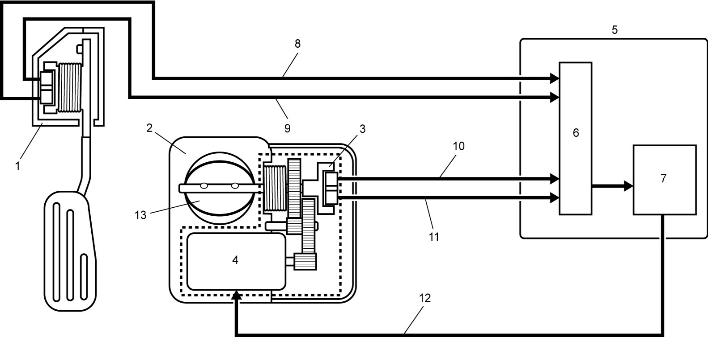

1A
| Electric Throttle Control System Description |
The electric throttle control system consists of the following items:
•Electric throttle body assembly incorporating the throttle valve, throttle actuator and TP sensors (main and sub)
•Accelerator pedal assembly incorporating APP sensors (main and sub)
•ECM
•Accelerator pedal assembly incorporating APP sensors (main and sub)
•ECM
Operation Description
ECM (5) detects depressed extent of the accelerator pedal based on the signal voltage of the APP sensor (1). Using that data and engine operation condition, ECM calculates the optimum throttle valve opening. On the other hand, it detects the throttle valve opening based on the signal voltage of the TP sensor (3) in the electric throttle body assembly (2) and compares this value with the above calculated optimum throttle valve opening. When there is a difference between them, ECM changes the duty ratio (100% to 0%) of throttle actuator control according to this difference to drive the throttle actuator (4) in the electric throttle body assembly. When there is no difference, ECM fixes the duty ratio to about 15% to maintain the throttle valve opening. In this way, the throttle valve (13) is opened and closed to achieve the optimum throttle valve opening.
In this system, TP sensor and APP sensor have 2 sensors (main and sub) each to assure highly accurate and reliable control and abnormality detection. When ECM detects an abnormality in the system, it stops controlling the throttle actuator.
This throttle body is not equipped with IAC valve for idle speed control. Idle speed control is performed by the throttle actuator by adjusting the throttle valve opening.

 "Expand image")
| 6. | CPU | 9. | APP sensor (sub) signal circuit | 12. | Drive circuit of throttle actuator |
| 7. | Throttle actuator driver | 10. | TP sensor (main) signal circuit | ||
| 8. | APP sensor (main) signal circuit | 11. | TP sensor (sub) signal circuit |